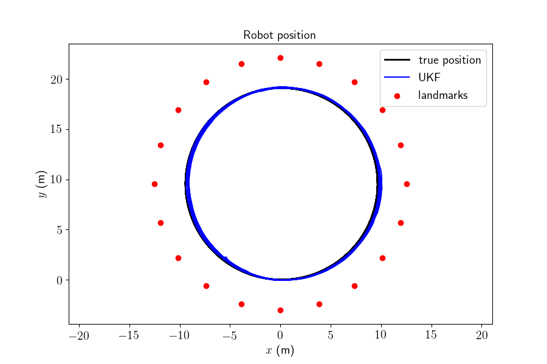
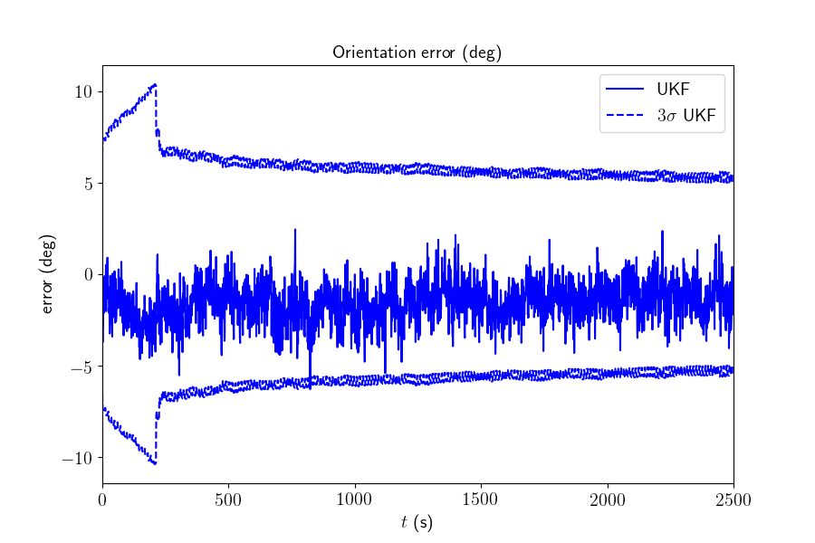

Note
Click here to download the full example code
2D Robot SLAM - Example¶
Goals of this script:
apply the UKF for performing 2D SLAM (Simultaneous Localization And Mapping).
discover a computationally alternative way for performing UKF inspired from [HMR13]. This alternative leads to computational speed improvement when only a part of the state is involved in a propagation or in update step.
augment the state when a new landmark is observed in a UKF derivative-free way.
We assume the reader is already familiar with the approach described in the tutorial.
This script considers the 2D robot SLAM problem where the robot is equipped with wheel odometry and observes unknown landmark measurements. The robot state is propagated through the odometry model and landmark observations are used in the UKF measurement step. Landmarks are static and we assume no error coming from data association. We reproduce the simulations that are described in [HMR10] , [HMR13].
Import¶
import ukfm
from ukfm import SLAM2D as MODEL
import numpy as np
import matplotlib
ukfm.set_matplotlib_config()
Model and Simulation¶
This script uses the SLAM2D() model that requires sequence time
and odometry frequency.
# sequence time (s)
T = 2500
# odometry frequency (Hz)
odo_freq = 1
# create the model
model = MODEL(T, odo_freq)
The trajectory of the robot consists in turning at constant speed.
# true speed of robot (m/s)
v = 0.25
# true angular velocity (rad/s)
gyro = 1.5 / 180 * np.pi
# odometry noise standard deviation
odo_std = np.array([0.05*v/np.sqrt(2), # speed (v/m)
0.05*v*np.sqrt(2)*2]) # angular speed (rad/s)
When simulating data, we generate a map. The map is defined as landmarks constantly spaced on a circle with slightly higher radius than the radius of the robot trajectory.
# simulate true trajectory and noisy input
states, omegas, ldks = model.simu_f(odo_std, v, gyro)
# observation noise standard deviation (m)
obs_std = 0.1
# plot the map
model.plot_traj(states, ldks)

The state and the input contain the following variables:
states[n].Rot # orientation (matrix)
states[n].p # robot position
states[n].p_l # landmark positions
omegas[n].gyro # robot angular velocity
omegas[n].v # robot speed
Landmark positions are a 2D array where we get the k-th landmark as
states[n].p_l[k]. The number of landmarks in the state starts from zero
and increases when the robot observes a new landmark.
We compute noisy landmark measurements based on the true states.
ys = model.simu_h(states, obs_std, ldks)
A measurement contains the observations of all visible landmarks as:
y_n = ys[n] # measurement at timestamp n
y_n_k = y_n[k] # k-th observed landmark at instant n, where y_n_k[2] is the
# landmark index (-1 if the landmark is not observed)
Filter Design and Initialization¶
We embed the robot state in \(SO(2) \times \mathbb{R}^2\) and each landmark position in \(\mathbb{R}^2\), such that:
the retraction \(\varphi(.,.)\) is the \(SO(2)\) exponential for orientation, and the vector addition for positions.
the inverse retraction \(\varphi^{-1}_.(.)\) is the \(SO(2)\) logarithm for orientation and the vector subtraction for positions.
Remaining parameter setting is standard.
# propagation noise covariance matrix
Q = np.diag(odo_std**2)
# measurement noise covariance matrix
R = obs_std**2*np.eye(2)
# sigma point parameters
alpha = np.array([1e-3, 1e-3, 1e-3, 1e-3, 1e-3])
# initial uncertainty matrix
P0 = np.zeros((3, 3)) # The state is perfectly initialized without
Regarding implementation, we use the Jacobian UKF (JUKF()) that
spares time when only a part of the space is involved in a propagation or
update step.
How it works ? Consider the propagation of the covariance in an extended Kalman filter as
where the robot state uncertainty is put in the first indices of the covariance matrix \(\mathbf{P}_{n}\). As landmarks are statics, the Jacobian take the forms
The JUKF allows to compute \(\mathbf{F}^R\) and \(\mathbf{G}^R\) by
only using the required sigma points. Here it corresponds to the sigma points
of the robot state. This requires to set the reduced retraction red_phi
and inverse retraction red_phi_inv that compute the required subpart of
the full retraction \(\varphi(.,.)\) and inverse retraction
\(\varphi^{-1}_.(.)\), and to define corresponding indices red_idx in
\(\mathbf{P}_n\).
Similarly for the observation of a landmark, e.g. the first landmark, the observation matrix has the form
The JUKF computes \(\mathbf{H}^1\) by only using the required sigma points
of the robot state and the observed landmark. This requires to set another
function up_phi using during update to compute a subpart of the retraction
\(\varphi(.,.)\), as corresponding indices up_idx in
\(\mathbf{P}_n\).
Finally, we require to define a new function \(z(.,.)\) to augment the state such that
where \(\boldsymbol{\chi}_n^{\mathrm{aug}}\) is the augmented state and
the \(\mathbf{y}_n\) the measurement used to augment the state. Here this
measurement is a landmark observation. To make the augmentation efficient we
need to compute sigma points for only the state involved in \(z(.,.)\),
aug_phi is thus only a subpart of \(\varphi(.,.)\) and aug_inv_phi
is the inverse retraction of \(\varphi(.,.)^{-1}\) corresponding to the
novel part of the state only.
# reduced weights during propagation
red_idxs = np.array([0, 1, 2]) # indices corresponding to the robot state in P
# weights during update
aug_idxs = np.array([0, 1, 2]) # indices corresponding to the robot state in P
state0 = model.STATE(Rot=states[0].Rot, p=states[0].p, p_l=np.zeros((0, 2)))
ukf = ukfm.JUKF(state0=state0, P0=P0, f=model.f, h=model.h, Q=Q, phi=model.phi,
alpha=alpha,
red_phi=model.red_phi,
red_phi_inv=model.red_phi_inv,
red_idxs=red_idxs,
up_phi=model.up_phi,
up_idxs=np.arange(5), # it will changes during the sequence
aug_z=model.aug_z,
aug_phi=model.aug_phi,
aug_phi_inv=model.aug_phi_inv,
aug_idxs=aug_idxs,
aug_q=2)
# set variables for recording estimates along the full trajectory
ukf_states = [states[0]]
ukf_Ps = [P0]
# indices of already observed landmarks
ukf_lmk = np.array([])
Filtering¶
The UKF proceeds as a standard Kalman filter with a for loop.
for n in range(1, model.N):
# propagation
ukf.propagation(omegas[n-1], model.dt)
y_n = ys[n]
# observed landmarks
idxs = np.where(y_n[:, 2] >= 0)[0]
# update each landmark already in the filter
p_ls = ukf.state.p_l
for idx0 in idxs:
idx = np.where(ukf_lmk == y_n[idx0, 2])[0]
if idx.shape[0] == 0:
continue
# indices of the robot and observed landmark in P
up_idxs = np.hstack([0, 1, 2, 3+2*idx, 4+2*idx])
ukf.state.p_l = np.squeeze(p_ls[idx])
# compute observability matrices and residual
ukf.H_num(np.squeeze(y_n[idx0, :2]), up_idxs, R)
ukf.state.p_l = p_ls
# update only if some landmarks have been observed
if ukf.H.shape[0] > 0:
ukf.state_update()
# augment the state with new landmark
for idx0 in idxs:
idx = np.where(ukf_lmk == y_n[idx0, 2])[0]
if not idx.shape[0] == 0:
continue
# augment the landmark state
ukf_lmk = np.hstack([ukf_lmk, int(y_n[idx0, 2])])
# indices of the new landmark
idx = ukf_lmk.shape[0]-1
# new landmark position
p_l = np.expand_dims(ukf.state.p + ukf.state.Rot.dot(y_n[idx0, :2]), 0)
p_ls = np.vstack([ukf.state.p_l, p_l])
ukf.state.p_l = p_l
# get Jacobian and then covariance following [2]
R_n = obs_std ** 2 * np.eye(2)
ukf.aug(y_n[idx0, :2], aug_idxs, R)
ukf.state.p_l = p_ls
# save estimates
ukf_states.append(ukf.state)
ukf_Ps.append(ukf.P)
Results¶
We plot the trajectory, the position of the landmarks and the estimated trajectory in the same plot, the attitude error, the position error, and their confidence interval.
model.plot_results(ukf_states, ukf_Ps, states, ldks)
- 
- 

We note the \(3\sigma\) confidence interval decreases along time.
Conclusion¶
This script shows how the UKF on parallelizable manifolds can be used for 2D SLAM. By leveraging numerical Jacobian inference, one obtains a computationally more efficient filter. The UKF works for this example, but consistency issues happear at the end of the trajectory.
You can now:
consider non-linear range and bearing measurement.
benchmark the UKF with different retractions and compare it to the extended Kalman filter and the invariant extended Kalman filter of [BB17].
Total running time of the script: ( 0 minutes 15.807 seconds)